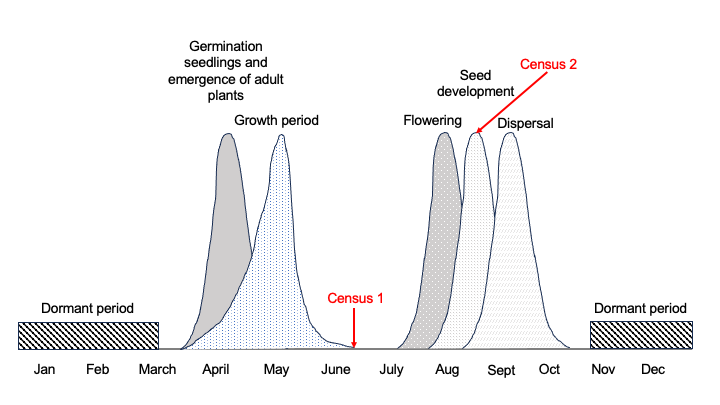
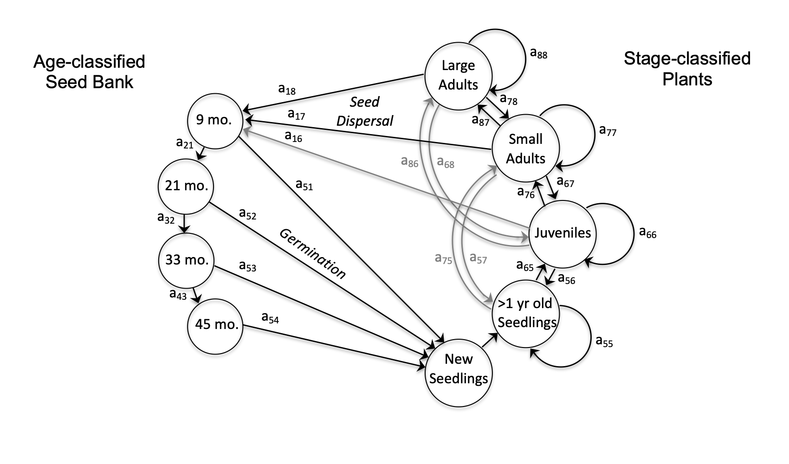

Chapter 24 Population sensation
Populations contain multitudes - numerous interacting individuals of the same species with slightly different genetic backgrounds, sharing genes, colonizing new areas, responding to environmental stimuli. Populations are hot-pots of evolution and essential for understanding species viability, especially when species are rare. Population-level studies have contributed fundamental ecological knowledge in evolution, range dynamics, and species conservation. Now that we are all jazzed about populations, let’s learn about how to describe them and their dynamics quantitative! May your knowledge acquisition be exponential!
24.1 Population characteristics
In population ecology, we commonly describe populations in terms of size and structure. Size is simply the number of individuals in a population and structure refers to the proportion of individuals across age or size classes. For rare species or species with low population sizes, population size can be directly estimated through a census. Just as it seems, a census is when each individual is counted. We often collect information pertinent to understanding demographic vital rates of individuals that are censused - just like we do in the U.S. census. For plants, rather than collect information on religious background or age as we would for populations of humans, we typically record the size of the plant and other salient characteristics derived from an understanding of the species’ breeding system, dispersal mechanism, life history, and ecology. When species are abundant, we use other methods to estimate population size, such as density (i.e., how many individuals occur within a particular area) or sub-sampling (i.e., collecting census data within a plot). If a species if cryptic, meaning hard to observe (as is the case for most animals), we use mark-recapture or occupancy modeling to estimate population size and structure.
24.2 Planning a census
Censuses are the ideal method for collecting demographic data, since it allows in-depth and comprehensive examination of the population (and it’s dynamics!). Let’s discuss some considerations for establishing a census protocol. When conducting a census, you want to plan on capturing critical life events and ensure that you are able to capture those life events through time (for multiple years). Let’s look at an example and establish a plan to census individuals within a population of this hypothetical species.
 The figure above shows a typical phenological pattern for an understory plant species in the eastern deciduous forest. These plants are dormant throughout the winter when temperatures are cold enough to freeze plant tissue. All plants, adults and new seedlings, emerge in the spring, and grow to their full size for the summer over a few week period in early spring. Then, they begin flowering and seed development in late summer, then disperse seeds into the fall.
The first census indicated in this figure takes place after emergence in the spring once plants have reached their final size for the growing season. The census is planned to occur as early as possible post-growth in order to assess recruitment (new seedlings that enter the population), since seedlings tend to start to die-off through time.
Seeds of this species require an 18-month stratification period prior to germination. In order to census across all members of the population, including seeds, we need to include the second census to quantify the number of seeds present at census 1, since counting seeds post-dispersal is almost impossible.
Note that we could capture individuals across all important classes, adult plants, seedlings and seeds, if we conducted a single census at time point 2. Why not conduct a single census? In this case, the researchers were interested in causes of mortality of plants, particularly new germinants, across the growing season. By conducting the census in the spring, they were able to identify all plants that emerged that year and note if those plants were lost during the growing season and in many cases ascribe a reason for the mortality of the plant.
24.3 Life cycle diagrams
In the above example, the census was timed to measure the performance and fate of important classes within the population. A useful tool for developing census protocols and demographic models is called a life cycle diagram. A life cycle diagram indicates important life stages and possible transitions among those stages. Continuing with our example above, we develop the following life history diagram.
 Here, you will note several important demographic characteristics of this species. First, on the right hand side of the diagram, you can see that the researchers have classified plants into several groups: new seedlings, >1 year old seedlings, juveniles, small adults and large adults. These categories were selected because individuals within the categories share similar rates of reproduction and survival (vital rates). On the left hand side of the diagram, you will see that this species forms a seedbank and that seeds within this seed back persist around 45 months.
24.4 Population demographic models
Population demographic models allow us to predict population trajectories, evaluate management strategies, understand extinction risk, and identify key life stages for conservation. Population demographic models come in several forms. We will take a deep dive into Integral Projection Models (IPMs), but understanding the various forms of population models will help you understand IPMs better!
24.4.1 Unstructured Models
Unstructured models refer to population growth models that do not distinguish among individuals within a population. In these models, all individuals are treated as equivalent, meaning they are assumed to have the same probabilities of survival and reproduction, regardless of differences in age, size, or life stage. Because unstructured models treat all individuals as identical, they are best suited for simple or theoretical questions and often serve as a foundation for more complex, structured population models that account for age, size, or stage.
The most basic population model describes a population experiencing exponential growth. Exponential growth—the idea that populations increase multiplicatively rather than additively — is foundational to Darwin’s development of the Theory of Evolution by Natural Selection. Darwin recognized that organisms have the capacity to produce far more offspring than are needed to replace themselves, and yet the world is not overrun by offspring (for example, ladybugs). From this insight, he reasoned that not all individuals can survive and reproduce, and that selection must therefore operate strongly and continuously. This differential survival and reproduction provides the mechanism by which natural selection can drive evolutionary change over time.
Since the concept of multiplicative growth is central to the equation for exponential growth rate, let’s compare additive versus exponential growth.
Additive growth means a population increases by a fixed number of individuals each time step, regardless of how large the population already is.
You can think of it as: “The population gains the same number each year.”
Example:
- Start with 100 individuals
- Add 10 individuals each year
- Population over time: Year 0: 100; Year 1: 110; Year 2: 120; Year 3: 130
Mathematically, this looks like:
\[ N_{t+1} = N_t + b \] where b is a constant number added each time step.
Multiplicative growth means the population increases by a proportion of its current size each time step.
You can think of it as: “The population grows by a percentage.”
Example:
- Start with 100 individuals
- Grow by 10% per year
- Population over time: Year 0: 100; Year 1: 110; Year 2: 121; Year 3: 133
Additive growth increases a population by a fixed number, while multiplicative growth increases a population by a proportion of its current size—making growth faster as populations get larger.
Mathematically, this looks like:
\[ N_{t+1} = \lambda N_t \] or in continuous time: \[ \frac{dN}{dt} = rN \] This form of growth is biologically realistic over short time scales and is the foundation of population ecology and evolutionary theory.
24.4.1.1 Exponential Growth: Unlimited resources, constant per capita growth
When to use: Short-term projections, invasive species establishment Key assumption: No limits to growth Equations:
The continuous-time exponential growth model describes how a population grows when resources are unlimited and the per-capita growth rate remains constant.
\[ N(t) = N_0 e^{rt} \] where:
- \(N(t)\) is the population size at time \(t\)
- \(N_0\) is the initial population size (at \(t = 0\))
- \(r\) is the intrinsic rate of increase
- \(e\) is the base of the natural logarithm
- \(t\) is time
or more simply: \[ N_{t+1} = \lambda N_t \] Given that it is exceedingly rare that there are no limits to population growth, population ecologist rarely use exponential growth models (I’ve never used this model for research).
24.4.1.2 Logistic Growth: Density-dependent regulation
In real ecosystems, resources are finite, so populations cannot grow exponentially forever. The logistic growth model captures this reality by slowing population growth as population size approaches carrying capacity—the maximum number of individuals an environment can support over time.
When to use: Populations approaching carrying capacity Key assumption: Negative density dependence, as populations get larger, per capita (per individual) growth decreases.
The logistic growth model is written as:
\[ \frac{dN}{dt} = rN\left(1 - \frac{N}{K}\right) \] where:
- \(N\) is population size
- \(r\) is the intrinsic rate of increase
- \(K\) is the carrying capacity
When population size (\(N\)) is small relative to carrying capacity (\(K\)), the term \(\left(1 - \frac{N}{K}\right)\) is close to 1 and population growth is approximately exponential. As \(N\) approaches \(K\), this term approaches 0, slowing growth until the population stabilizes. Note that the logistic growth equation is essentially the continuous exponential growth equation with a penalty for large populations!
24.4.2 Structured Models
For most macroecological applications—such as modeling population growth in plants, tigers, or mice—unstructured models are inappropriate because individuals differ substantially in their probabilities of survival and reproduction depending on their age, size, or life stage. To address this, age-structured population models were developed in the mid-20th century.
In 1945, Patrick Leslie introduced the Leslie matrix, a discrete-time, age-structured model designed to track populations divided into age classes. Leslie’s work was motivated largely by human demography and vertebrate populations, where age is relatively easy to determine and closely tied to survival and reproduction. The Leslie matrix provided a powerful framework for predicting population growth rates, stable age distributions, and sensitivity to changes in survival or fecundity.
However, for many organisms—particularly plants and invertebrates—age is difficult or impossible to measure, and demographic rates are often more strongly associated with developmental stage or size than chronological age. In response, Lefkovitch (1965) extended Leslie’s framework to create the stage-structured matrix model, which allows individuals to transition among life stages rather than progress strictly by age. This innovation made structured population modeling broadly applicable across ecological systems, especially for organisms with complex life cycles or variable growth rates.
Hal Caswell formalized, unified, and generalized structured population models into a coherent mathematical and ecological framework. His book is the cornerstone reference for population modeling, especially for ecology: Caswell, H. (2001; updated 2019). Matrix Population Models: Construction, Analysis, and Interpretation.
William F. Morris and Daniel F. Doak further tuned population analysis for conservation, focusing on viability analyses, in their seminal book: Morris, W. F., & Doak, D. F. (2002). Quantitative Conservation Biology.
These are great references and citations to use in your research!
24.4.2.1 Age-structured models (Leslie matrix)
Structure: Discrete age classes
When to use:
- Species with clearly defined age classes
- Long-lived organisms where age strongly predicts survival and reproduction
Examples:
- Mammals
Because demographic rates in many ecological systems depend more on size or stage than on age, we will walk through a matrix model example below using a stage-structured (Lefkovitch) matrix. The mathematics underlying this approach is essentially identical to that of age-structured models.
24.4.2.2 Stage-structured models (Lefkovitch matrix)
Structure: Discrete life stages (e.g., juvenile, subadult, adult)
When to use:
- Age is difficult or impossible to determine
- Demographic rates depend more on stage or size than age
Examples:
- Plants (seedling, sapling, adult)
- Insects with metamorphosis
- Amphibians
Using matrices to model population dynamics allows us to track the fate of individuals in a population within a single, unified framework. To build a demographic model, population ecologists first describe the species’ life cycle, identifying groups of individuals that share similar vital rates, such as survival, growth, and reproduction.
These groups—often called stages—form the structure of the matrix. Each column represents individuals currently in a given stage, and each row represents the stage they may transition into during the next time step. The values in the matrix describe the probabilities of survival, transitions among stages, and reproduction.
24.4.2.2.1 Example: A stage-structured (Lefkovitch) matrix
Let’s look at a matrix for a hypothetical plant population. We’ve broken the population into three stages Juveniles, Subadults, and Adults. The adults are the only stage able to reproduce. We start with a population consisting of 100 juveniles, 50 subadults, 20 adults.
Let’s transform this life cycle diagram into a matrix! To do this, you would have marked the plants in this population and conducted a census. You would then be able to quantify all the possible transitions, marked by arrows connecting stages in the life cycle diagram.
Load programs:
Create a life cycle diagram:
# Create life cycle diagram for the plant example
grViz("
digraph plant_lifecycle {
# Graph attributes
graph [rankdir = LR, fontsize = 12]
# Node definitions with labels
node [shape = circle, style = filled, fillcolor = lightblue,
fontname = Helvetica, fontsize = 14]
Seeds [label = 'Seeds\n(S)']
Juveniles [label = 'Juveniles\n(J)']
Adults [label = 'Adults\n(A)']
# Edge definitions with labels showing transition probabilities
Seeds -> Seeds [label = '0.05\n(stay seed)', fontsize = 10]
Seeds -> Juveniles [label = '0.10\n(germinate)', fontsize = 10]
Juveniles -> Juveniles [label = '0.30\n(stay juv)', fontsize = 10]
Juveniles -> Adults [label = '0.50\n(mature)', fontsize = 10]
Adults -> Adults [label = '0.90\n(survive)', fontsize = 10]
Adults -> Seeds [label = '15.0\n(fecundity)', fontsize = 10,
color = red, penwidth = 2]
}
")Let’s transform this into a matrix!
A <- matrix(c(0.1, 0.3, 0, # Juveniles column
0, 0.5, 0.2, # Subadults column
0, 0, 0.8), # Adults column (with fecundity)
nrow = 3, ncol = 3, byrow = FALSE)
# Let's look at the matrix
library(tibble)
library(knitr)
# Name stages
stages <- c("Juvenile", "Subadult", "Adult")
# Convert matrix to a tidy table
A_df <- as.data.frame(A)
colnames(A_df) <- stages
rownames(A_df) <- stages
# Display nicely
kable(A_df, digits = 2,
caption = "Stage-structured (Lefkovitch) projection matrix")| Juvenile | Subadult | Adult | |
|---|---|---|---|
| Juvenile | 0.1 | 0.0 | 0.0 |
| Subadult | 0.3 | 0.5 | 0.0 |
| Adult | 0.0 | 0.2 | 0.8 |
# Starting population vector
n0 <- c(100, 50, 20) # 100 juveniles, 50 subadults, 20 adults
# Project one time step
n1 <- A %*% n0Here, the population vector lists the number of individuals in each stage at time \(t\), and matrix multiplication projects the population forward one time step to \(t + 1\). To see what is happening biologically, we can write out the matrix multiplication explicitly for one time step:
The number of juveniles at the next time step is calculated as:
\[ n(J, t+1) = 0.1(100) = 10 \]
This means that 10% of the 100 juveniles present at time \(t\) survive and remain in the juvenile stage.
The number of subadults at the next time step is calculated as:
\[ n(S, t+1) = 0.3(100) + 0.5(50) = 55 \]
This includes contributions from two processes:
- 30% of juveniles grow into subadults
- 50% of subadults survive and remain subadults
The number of adults at the next time step is calculated as:
\[ n(A, t+1) = 0.2(50) + 0.8(20) = 26 \]
This reflects:
- Maturation of subadults into adults
- Survival of existing adults
24.4.2.2.1.1 Total population size and growth
The total population size at time \(t\) is the sum of individuals across all stages:
\[ N_t = 100 + 50 + 20 = 170 \]
The total population size at time \(t+1\) is:
\[ N_{t+1} = 10 + 55 + 26 = 91 \]
The absolute change in population size is:
\[ \Delta N = N_{t+1} - N_t = 91 - 170 = -79 \]
This indicates that the population declined by 79 individuals over one time step.
The proportional population growth rate over one time step is:
\[ \lambda = \frac{N_{t+1}}{N_t} = \frac{91}{170} \approx 0.54 \]
A value of \(\lambda < 1\) indicates that, under these demographic rates, the population is declining. Et viola! That is basic matrix math!
Want to learn how to multiply matrices? Leslie matrix population projection example (YouTube)
These short-term, time-dependent dynamics are summarized using a suite of metrics collectively referred to as transient dynamics. These measures capture how populations behave before reaching long-term equilibrium, and we will explore them in more detail shortly.
24.4.2.2.1.2 Population growth rate (λ): the dominant eigenvalue
After many time steps (repeat the process above), a structured population tends to settle into a stable pattern in which the relative proportions of individuals in each stage remain constant, even though the total population size may be changing. The rate at which the population grows or declines at this stable structure is denoted by \(\lambda\) (lambda).
Transient dynamics capture how populations behave over short time scales and can be strongly influenced by the initial mix of life stages. While these short-term responses are often ecologically important, they can be difficult to compare across populations because they depend on where the population starts. By contrast, describes the long-term growth or decline of a population once it has settled into a stable stage distribution. Because is determined by the underlying life cycle rather than initial conditions, it provides a consistent and interpretable measure of population viability and long-term persistence.
Conceptual definition: λ is the long-term, proportional population growth rate implied by the matrix.
• $\lambda > 1$: population grows
• $\lambda = 1$: population is stable
• $\lambda < 1$: population declinesMathematically, \(\lambda\) is the dominant eigenvalue of the projection matrix:
\[ \mathbf{A}\mathbf{n} = \lambda \mathbf{n} \] In practice, \(\lambda\) can be interpreted as the ratio of population size between successive time steps once the population has reached its stable stage distribution:
\[ \lambda = \frac{N_{t+1}}{N_t} \] Mathematically, is the dominant eigenvalue of the projection matrix. When the matrix is repeatedly multiplied by a population vector, the population eventually grows or declines at a constant proportional rate, and that rate is given by .
What is an eigenvalue? Think of a matrix as a machine that reshuffles individuals among life stages. Most starting populations change shape as they pass through this machine. Eventually, the population settles into a stable mix of juveniles, subadults, and adults. After that point, the matrix redistributes individuals in the same proportions each time step, so the population simply grows or shrinks without changing its stage structure. The number that tells us how much larger or smaller the population gets each step is called the dominant eigenvalue, . Let me show you in terms of matrix structure:
24.4.2.2.1.2.1 The projection matrix (structure)
The A or transition matrix (as we call the matrix the summarizes transitions / dynamics), consists of these parts:
- Rows = stage at t+1
- Columns = stage at t
- Entries = survival, growth, reproduction
24.4.2.2.1.2.2 Eigenvectors = stage structure
An eigenvector describes a pattern of stage abundances:
- Dominant eigenvector → stable stage distribution
- Subdominant eigenvectors → transient dynamics (oscillations, overshoot, lag)
24.4.2.2.1.2.3 Eigenvalues = scaling rates
Eigenvalues tell us how fast those patterns grow or decay.
- Dominant eigenvalue (_1) → long-term growth rate
- Subdominant eigenvalues (_2, _3) → how fast transients fade
24.4.2.2.1.2.4 Why “dominant” matters
The dominant eigenvalue is called “dominant” because it eventually overwhelms all other dynamics. No matter how a population starts, its long-term behavior is governed by this single value.
This matrix-based framework provides the foundation for sensitivity analyses, elasticities, and more advanced models such as Integral Projection Models (IPMs), which extend the same logic to continuous size variables.
24.5 Integral projection models
When building standard matrix population models, stages are defined based on our understanding of which groups within a population exhibit similar vital rates. In reality, however, vital rates often vary continuously among individuals rather than falling into discrete categories. As a result, stage boundaries are frequently imposed by binning individuals into classes that may be somewhat arbitrary. In some cases this binning is practical or biologically justified—for example, when land managers conduct rapid censuses by counting only large, reproductively mature individuals. In many systems, however, discrete stages are approximations rather than natural divisions of demographic variation.
Instead of binning individuals into discrete stages, Integral Projection Models (IPMs) describe population dynamics using a continuous state variable, most commonly a measure of individual size (such as height, diameter, or biomass in plants). In IPMs, vital rates—such as survival, growth, and reproduction—are modeled as functions of this state variable using statistical models fit to data.
Conceptually, IPMs extend stage-structured matrix models by replacing discrete stage classes with a continuous size axis. This allows IPMs to capture fine-scale demographic variation without requiring arbitrary size bins. One useful way to think about an IPM is as an extremely fine-grained matrix model. Instead of a small matrix with a handful of discrete stages, an IPM can be viewed as a very large matrix in which individuals are divided into many tiny size classes, each with correspondingly small transition probabilities. In practice, this “infinite matrix” is represented mathematically by a kernel that combines survival, growth, and reproduction processes.
This kernel plays the same conceptual role as a projection matrix in a matrix population model: it maps the population’s size distribution at time t to the distribution at time t+1. As in matrix models, repeated application of the kernel leads to a stable size distribution and a long-term population growth rate, .
Mathematically, IPMs are built from a kernel that combines survival, growth, and reproduction processes. This kernel plays the same role as a projection matrix in a matrix population model: it maps the population’s size distribution at time \(t\) to the distribution at time \(t+1\). As in matrix models, repeated application of the kernel leads to a stable size distribution and a long-term population growth rate, \(\lambda\).
Because IPMs preserve the biological logic of matrix models while allowing demographic rates to vary smoothly with size, they are particularly well suited for plant populations and other organisms in which size, rather than age or stage, best predicts survival and reproduction.
Since my lab uses IPMs for most demographic analyses, we will explore these models in detail in the next chapter!
24.6 Population dynamics
Once a demographic model has been constructed—whether as a stage-structured matrix or an Integral Projection Model—it can be used to quantify a wide range of population-level properties. These quantities describe not only whether a population is growing or declining, but also why it behaves the way it does and which demographic processes matter most.
Together, these quantities are referred to as population dynamics, and they provide insight into long-term growth, short-term responses to disturbance, and the sensitivity of populations to changes in survival, growth, or reproduction.
24.6.1 Population growth rate
The most fundamental quantity derived from a projection matrix is the long-term population growth rate, \(\lambda\). As discussed above, \(\lambda\) is the dominant eigenvalue of the matrix and describes whether a population is expected to grow (\(\lambda > 1\)), decline (\(\lambda < 1\)), or remain stable (\(\lambda = 1\)) once it reaches a stable structure. We calculated this above!
24.6.2 Stable stage distribution
Associated with \(\lambda\) is the stable stage distribution, given by the dominant right eigenvector of the projection matrix. This distribution describes the long-term proportion of individuals in each stage, independent of initial population structure.
24.6.3 Reproductive value
The reproductive value of each stage, given by the dominant left eigenvector, describes the relative contribution of individuals in different stages to future population growth. Stages with high reproductive value have a disproportionate influence on population dynamics.
24.6.4 Sensitivities: absolute effects
Sensitivity analysis quantifies how much \(\lambda\) would change in response to a small absolute change in a given matrix element. Sensitivities answer the question: If this vital rate increased slightly, how much would population growth change?
Let \(\mathbf{A}\) be a population projection matrix with dominant eigenvalue \(\lambda\), right eigenvector \(\mathbf{w}\) (stable stage distribution), and left eigenvector \(\mathbf{v}\) (reproductive value), scaled such that:
\[ \mathbf{v}^\top \mathbf{w} = 1 \] The sensitivity of population growth rate \(\lambda\) to a matrix element \(a_{ij}\) is defined as:
\[ s_{ij} = \frac{\partial \lambda}{\partial a_{ij}} \]
For matrix population models, sensitivities can be calculated as:
\[ s_{ij} = v_i w_j \] Sensitivity measures how much \(\lambda\) changes in response to a small absolute change in a vital rate.
24.6.5 Elasticities: proportional effects
Because vital rates are measured on different scales, sensitivities can be difficult to compare directly. Elasticity analysis rescales sensitivities to measure the proportional change in \(\lambda\) resulting from a proportional change in a matrix element.
Elasticities answer the question: Which life-history processes does population growth depend on most, relative to their current values? Since elasticities allow us to compare across species, reveal life-history strategies, and can be useful for management prioritization, we use and report elasticities more frequently than sensitivities.
Because matrix elements are measured on different scales, sensitivities are often rescaled to obtain elasticities, which measure proportional effects.
The elasticity of \(\lambda\) with respect to matrix element \(a_{ij}\) is:
\[ e_{ij} = \frac{a_{ij}}{\lambda} \frac{\partial \lambda}{\partial a_{ij}} \]
Substituting the sensitivity expression gives:
\[ e_{ij} = \frac{a_{ij}}{\lambda} v_i w_j \] The sum of all elasticities equals 1:
\[ \sum_{i,j} e_{ij} = 1 \] Together, sensitivities and elasticities reveal how population growth is partitioned among survival, growth, and reproduction. For example, long-lived species often show high elasticity to adult survival, whereas short-lived or fast-growing species tend to show higher elasticity to reproduction.
24.6.6 Beyond asymptotic dynamics: transient behavior
While \(\lambda\), stable stage distributions, and elasticities describe long-term behavior, populations often experience important short-term dynamics before equilibrium is reached. These transient dynamics capture temporary amplification, decline, or oscillations driven by initial population structure or disturbance. Let’s go over some common metrics to describe transient dynamics!
Let:
- \(\mathbf{n}_0\) be an initial population vector
- \(\mathbf{A}\) be the projection matrix
- \(\lambda\) be the dominant eigenvalue
24.6.6.1 Reactivity (short-term amplification)
Reactivity measures the maximum possible proportional population growth over one time step, relative to long-term growth:
\[ \rho_1 = \max_{\mathbf{n}_0} \frac{\|\mathbf{A}\mathbf{n}_0\|}{\|\mathbf{n}_0\|} \] Interpretation:
- \(\rho_1 > \lambda\) indicates transient amplification
- \(\rho_1 < \lambda\) indicates immediate decline
24.6.6.2 Maximum amplification over time
The maximum amplification over all time steps is:
\[ \rho_{\max} = \max_{t \ge 1} \frac{\|\mathbf{A}^t \mathbf{n}_0\|}{\|\mathbf{n}_0\|} \] This quantity captures the largest possible transient increase in population size that can occur before long-term (asymptotic) behavior dominates.
Interpretation:
Maximum amplification describes the strongest short-term population response that can arise purely from population structure, even when long-term growth is stable or declining. A population with \(\lambda \le 1\) may still experience substantial temporary growth if its initial stage structure aligns with highly productive or resilient stages. In applied contexts, high values of \(\rho_{\max}\) indicate the potential for short-term booms following disturbance, management action, or unusual recruitment events, even if long-term persistence is not guaranteed.
24.6.6.3 Inertia
Inertia describes how long the influence of initial population structure persists before convergence to stable growth:
\[ \text{Inertia} = \frac{\|\mathbf{A}^t \mathbf{n}_0\|}{\lambda^t \|\mathbf{n}_0\|} \quad \text{as } t \to \infty \] Interpretation:
- Values greater than 1 indicate persistent amplification
- Values less than 1 indicate persistent suppression
24.6.6.4 Damping ratio (rate of convergence)
The damping ratio quantifies how quickly transient dynamics decay and is defined as:
\[ \text{Damping ratio} = \frac{|\lambda_1|}{|\lambda_2|} \]
where:
- \(\lambda_1\) is the dominant eigenvalue
- \(\lambda_2\) is the subdominant eigenvalue (second largest magnitude)
Interpretation:
- Larger values indicate faster convergence to the stable stage distribution
- Values close to 1 indicate long-lasting transient dynamics
24.7 Chapter summary
In this chapter, we explored a progression of demographic models used to describe and analyze population dynamics. We began with simple, unstructured models of exponential and logistic growth, which capture fundamental principles of population increase and resource limitation. While these models provide important conceptual foundations, they assume that all individuals in a population are demographically identical.
We then introduced structured population models, which explicitly account for differences among individuals based on age, stage, or size. Age-structured (Leslie) and stage-structured (Lefkovitch) matrix models describe how individuals transition among life stages and how these transitions determine population growth. From these models, we can calculate key quantities such as the population growth rate (\(\lambda\)), stable stage distribution, and reproductive value.
Building on this framework, we examined how sensitivities and elasticities identify which vital rates have the greatest influence on population growth, and how transient dynamics describe short-term population responses before long-term equilibrium is reached. Metrics such as reactivity, maximum amplification, inertia, and the damping ratio reveal how populations can temporarily grow, decline, or overshoot even when long-term growth is stable or negative.
Finally, we introduced Integral Projection Models (IPMs), which extend matrix models by treating size as a continuous variable rather than dividing individuals into discrete stages. IPMs preserve the logic of matrix models while avoiding arbitrary stage boundaries, making them particularly well suited for plant populations and other systems where vital rates vary smoothly with size.
Together, these approaches provide a powerful toolkit for understanding how individual-level processes scale up to population-level dynamics, and for identifying the demographic mechanisms that drive population growth, decline, and resilience.
24.8 Test your knowledge
What is the key difference between unstructured population models and structured population models?
Why is exponential growth considered a multiplicative process rather than an additive one?
In a stage-structured matrix model, what biological processes are represented by:
- diagonal matrix elements?
- off-diagonal matrix elements?
What does the dominant eigenvalue (\(\lambda\)) represent in a population projection matrix, and why is it useful for comparing populations?
What is the stable stage distribution, and how does it differ from the population’s initial stage structure?
Explain why sensitivities and elasticities can lead to different conclusions about which life stages matter most for population growth.
A population has \(\lambda < 1\) but exhibits high maximum amplification. What does this tell you about its short-term versus long-term dynamics?
Why might transient dynamics be especially important for populations experiencing disturbance, management interventions, or rapid environmental change?
Give one ecological situation where a stage-structured matrix model is appropriate and one where an Integral Projection Model would be preferable.
Explain why sensitivities and elasticities can lead to different conclusions about which life stages matter most for population growth.
A population has \(\lambda < 1\) but exhibits high maximum amplification. What does this tell you about its short-term versus long-term dynamics?
Why might transient dynamics be especially important for populations experiencing disturbance, management interventions, or rapid environmental change?
Give one ecological situation where a stage-structured matrix model is appropriate and one where an Integral Projection Model would be preferable.
Suppose a population has:
- high elasticity to adult survival
- low elasticity to reproduction
What type of life-history strategy does this suggest, and how might this influence management priorities?
Two populations have the same \(\lambda\), but one has a much lower damping ratio than the other. What does this imply about their transient dynamics?
Why might focusing only on long-term population growth (\(\lambda\)) be misleading in some ecological or conservation contexts?
How do matrix models and IPMs help bridge individual-level processes (survival, growth, reproduction) with population-level outcomes?
24.9 Assignment
Create a life cycle diagram for a species that you would like to examine. This species may be a plant or animal, but you should choose a system for which life stages or size classes are biologically meaningful.
Life cycle diagrams are simplified representations of population structure and demographic processes. For Integral Projection Models (IPMs) in particular, these diagrams are often highly reduced, because size is treated as a continuous variable rather than divided into discrete stages.
For example, a perennial plant life cycle diagram might include:
- A single size-based individual stage (rather than multiple discrete stages)
- Survival and growth within that size continuum
- Reproduction producing new individuals (e.g., seedlings)
24.9.1 Your task
Choose a focal species and briefly describe its life history (1–2 sentences).
Identify the key life stages or size classes relevant to its survival, growth, and reproduction.
Draw a life cycle diagram that includes:
- All stages or size classes
- Arrows showing possible transitions among stages
- Arrows representing survival, growth, and reproduction
Clearly label all stages and arrows.